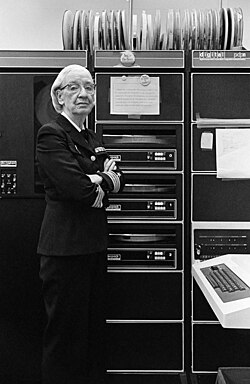
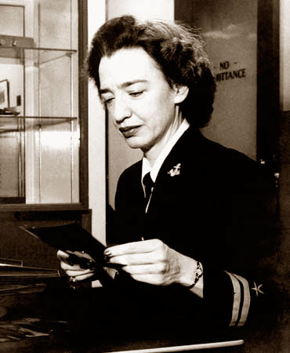

Первые годы жизни и образование.
Родилась в Нью-Йорке. Имя при рождении — Грейс Брюстер Мюррей. Из троих детей она была старшей. В детстве она была любопытна, и эта черта осталась с ней на всю жизнь. В возрасте семи лет она решила выяснить, как работает будильник. Она разобрала семь будильников, прежде чем её мать поняла, что происходит; впоследствии ей пришлось ограничиться одним будильником. Для подготовки к поступлению в колледж она отучилась в школе Уордлоу-Хартриджа в городе Плейнфилд (Нью-Джерси). Первая попытка поступить в колледж Вассар в 16 лет не увенчалась успехом из-за невысокого балла по латыни. На следующий год она смогла поступить, окончила колледж в 1928 году со степенью бакалавра математики и физики с почётным дипломом академического общества Фи-бета-каппа. Степень магистра получила в Йельском университете в 1930 году. В 1934 году там же защитила докторскую диссертацию по математике под руководством Ойстина Оре «Новые типы критериев неприводимости». С 1934 года — преподаватель математики в Вассаре, с 1941 года — адъюнкт-профессором. Состояла в браке с профессором Нью-Йоркского университета Винсентом Фостером Хоппером (1906—1976) с 1930 года до развода в 1945 году. Сохранила фамилию мужа и больше не вступала в брак.